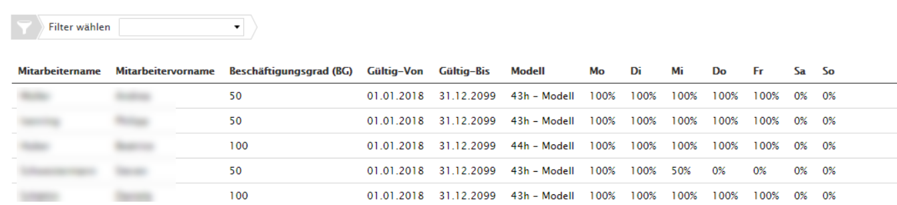
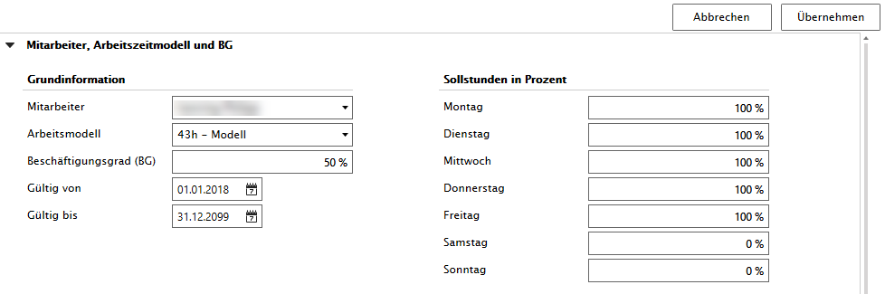

Stammdaten Mitarbeiter
Der User mit der Rolle 'Stammdatenverwaltung' definiert bei jedem Mitarbeiter, für den die Zeiterfassung möglich ist, folgende Punkte:
Personalnummer (als Verknüpfung zu Dienstplanungen von Drittfirmen)
Beschäftungsgrad (BG)
Arbeitszeitmodell (Stunden pro Woche)
Beschäftigung, Ansicht pro Wochentag

Um das Arbeitszeitmodell pro Zeitabschnitt festlegen zu können, hat jeder Eintrag ein Gültig-Von/Bis-Datum.
Beispiel: Ein Mitarbeiter arbeitet bis Ende Juni 2019 zu 100% und reduziert ab 1.7.2019 auf einen Beschäftigungsgrad von 50% bei einem 44h-Modell. Dies wirkt sich in der Tagessoll-Bestimmung aus (z.B. von 8.8h 4.4h pro Tag).

Anpassung Arbeitszeitmodell des Mitarbeiters

Mitarbeiter arbeitet mit Beschäftigungsgrad von 50% und an allen Werktagen. Dies hat Einfluss auf die Tagessollstundenberechnung
Tagessoll = 50% von 43h → 4.3 h pro Tag
Arbeitet ein Mitarbeiter an einem Samstag oder Sonntag, so besteht kein Tagessoll